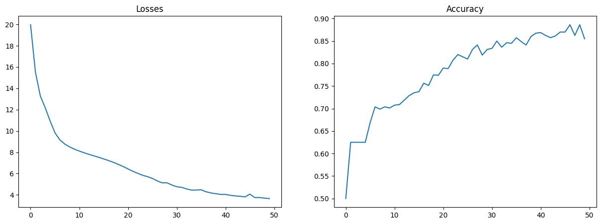

# #| hide
# %load_ext autoreload
# %autoreload 2Imports
RNN
get_examples
get_examples (seq_len, num_examples, max_number)
for inp, tgt in zip(inputs[:10], targets[:10]):
print(f'inputs/sorted: {list(inp), list(tgt)}')inputs/sorted: ([7, 9, 0], [0, 7, 9])
inputs/sorted: ([9, 9, 1], [1, 9, 9])
inputs/sorted: ([9, 8, 8], [8, 8, 9])
inputs/sorted: ([8, 8, 7], [7, 8, 8])
inputs/sorted: ([1, 1, 5], [1, 1, 5])
inputs/sorted: ([8, 8, 9], [8, 8, 9])
inputs/sorted: ([1, 3, 7], [1, 3, 7])
inputs/sorted: ([7, 0, 2], [0, 2, 7])
inputs/sorted: ([9, 8, 4], [4, 8, 9])
inputs/sorted: ([4, 9, 1], [1, 4, 9])to_string
to_string (X, seq_len, max_number)
print(f'inputs[0]: {inputs[0]} targets[0]: {targets[0]}')inputs[0]: 7,9,0 targets[0]: 0,7,9 integer_encode
integer_encode (X, vocab)
print(f'inputs[0]: {inputs[0]} targets[0]: {targets[0]}')inputs[0]: [7, 10, 9, 10, 0, 11, 11, 11] targets[0]: [0, 10, 7, 10, 9, 11, 11, 11]# from fast_deep_rnn.core import *
from fast_deep_rnn.core_v2 import *
from fast_deep_rnn.common_core import *1. LSTM
LSTM cell formulas: \[ f_t=\sigma\Bigg(W_f\cdot\Big[h_{t-1};x_t\Big] + b_f\Bigg)\\ i_t = \sigma\Bigg(W_i\cdot\Big[h_{t-1};x_t\Big] + b_i\Bigg)\\ \tilde{c}_t = \tanh\Bigg(W_c\cdot\Big[h_{t-1};x_t\Big] + b_c\Bigg)\\ c_t = f_t \ast c_{t-1} + i_t \ast \tilde{c}_t\\ o_t = \sigma\Bigg(W_o\cdot\Big[h_{t-1};x_t\Big] + b_o\Bigg)\\ h_t = o_t \ast \tanh \left(c_t\right) \]
As you can see, we’ll need two additional functions here: sum and multiplication.
class LSTMCell(Module):
def __init__(self, state_size: int, hidden_size: int):
super().__init__()
self.lin_f = LinearLayer(state_size, hidden_size)
self.lin_i = LinearLayer(state_size, hidden_size)
self.lin_c = LinearLayer(state_size, hidden_size)
self.lin_o = LinearLayer(state_size, hidden_size)
self.sigm = SigmoidFunction()
self.tanh = TanhFunction()
self.hstack = HStack()
self.sum = Sum()
self.prod = Multiply()
self.register_parameters([self.lin_f, self.lin_i, self.lin_c, self.lin_o])
def forward(self, x: Tensor, h_t_1: Tensor, c_t_1: Tensor):
h_x = self.hstack(h_t_1, x)
f_t = self.sigm(self.lin_f(h_x))
i_t = self.sigm(self.lin_i(h_x))
o_t = self.sigm(self.lin_o(h_x))
c_tild = self.tanh(self.lin_c(h_x))
c_t = self.sum(self.prod(f_t, c_t_1), self.prod(c_tild, i_t))
h_t = self.prod(o_t, self.tanh(c_t))
return h_t, c_tclass LSTM(Module):
def __init__(self, input_size: int, hidden_size: int):
super().__init__()
self.input_size = input_size
self.hidden_size = hidden_size
self.state_size = input_size + hidden_size
self.rnn = LSTMCell(self.state_size, hidden_size)
self.row = Row()
self.vstack = VStack()
self.register_parameters([self.rnn])
def forward(self, x: Tensor, h_t_1: Optional[Tensor] = None, c_t_1: Optional[Tensor] = None):
seq_len, batch_size, input_size = x.shape
h = Tensor(np.zeros((0, batch_size, self.hidden_size)), name="h")
if h_t_1 is None:
h_t_1 = Tensor(np.zeros((batch_size, self.hidden_size)), name="h_t_1")
if c_t_1 is None:
c_t_1 = Tensor(np.zeros((batch_size, self.hidden_size)), name="c_t_1")
for idx in range(seq_len):
h_t_1, c_t_1 = self.rnn.forward(self.row(x, idx), h_t_1, c_t_1)
h = self.vstack(h, h_t_1.reshape((1, batch_size, self.hidden_size)))
return h# tests
a, b = Tensor(data=np.random.rand(10, 10)), Tensor(data=np.random.rand(10, 10))
sum = SumFunction(a, b)()
print(sum.data)
sum.backward(sum.data)
prod = MultiplyFunction(a, b)()
print(prod.data)
prod.backward(prod.data);ERROR:root:Tensor:None. Got more backward calls than expected
ERROR:root:Tensor:None. Got more backward calls than expected
ERROR:root:Tensor:None. Got more backward calls than expected
ERROR:root:Tensor:None. Got more backward calls than expected
ERROR:root:Tensor:None. Got more backward calls than expected
ERROR:root:Tensor:None. Got more backward calls than expected[[1.65299488 1.42776071 0.76131599 1.41899855 0.57134782 0.94231703
1.26766889 1.3333492 1.52385769 1.6110472 ]
[1.19479751 1.04549857 0.88565684 1.38838772 1.1969301 0.72386045
0.16866742 1.52548823 0.61421559 1.33658029]
[1.23098824 0.66164974 0.55784923 1.21871756 1.80784792 1.08187892
1.2254691 1.32918664 0.75915538 1.6705639 ]
[1.20548422 0.9846836 0.86671425 1.32445247 1.85951536 0.30605556
1.6505626 1.33036937 0.75248793 0.19358633]
[0.85361234 1.78798884 0.39317786 1.54966173 1.63178438 0.71925441
1.03138994 1.12080652 1.04391463 0.48557039]
[1.36747921 0.55599263 0.68690877 1.02821442 1.13828471 1.00981635
0.9632472 0.55936523 0.7421629 1.50382229]
[1.31072483 0.96663788 0.52406689 1.12717286 0.38205694 0.966493
0.99754129 0.89943291 0.81968021 0.23430332]
[1.26882622 1.34583211 1.591741 0.90747936 1.71644111 0.89676468
0.86428205 0.29880053 0.69247615 1.24586249]
[0.94573364 1.01975419 0.89679696 0.63056758 0.65837428 0.22459493
1.28018313 1.16802418 0.61508887 0.41282919]
[1.1536258 1.50256585 0.37388107 0.94592071 0.83053356 0.1328745
0.99418905 1.66488222 1.20963377 1.29894637]]
[[0.68145632 0.44576967 0.13104596 0.50172769 0.05288222 0.20089652
0.37374963 0.36255796 0.55120459 0.64763917]
[0.34875718 0.09104326 0.19449975 0.48188344 0.24851954 0.11334347
0.00638327 0.58171237 0.07923071 0.38514182]
[0.24737374 0.10923881 0.06603064 0.3605887 0.81516987 0.2835744
0.27824856 0.40305802 0.14375837 0.69173255]
[0.30041046 0.11620908 0.05726468 0.3899856 0.86327254 0.01497032
0.6648766 0.44228749 0.12392904 0.00730864]
[0.05483113 0.79888976 0.0310558 0.58862454 0.63613317 0.11834582
0.21824856 0.23536304 0.25766364 0.05227412]
[0.46157213 0.07406699 0.09742311 0.24939074 0.27712565 0.18288218
0.01136631 0.06027385 0.1012515 0.55638077]
[0.40228512 0.19003787 0.0527081 0.213217 0.03491973 0.10009228
0.18777247 0.20138509 0.0065551 0.01093927]
[0.3951503 0.44263153 0.61843679 0.1965381 0.72968327 0.20092844
0.05738571 0.02154013 0.11762714 0.26512449]
[0.17352374 0.17673334 0.01673415 0.08723666 0.1069048 0.01260176
0.3983193 0.33712109 0.09086653 0.03833636]
[0.19267669 0.56440777 0.0314773 0.15290881 0.16779702 0.00210519
0.21196628 0.68190422 0.21568451 0.34747243]]Sorting training
class RecurrentNetwork(Module):
def __init__(self, vocab_size: int, emb_size: int, hidden_size: int):
super().__init__()
self.emb_size = emb_size
self.hidden_size = hidden_size
self.embedding = Embedding(vocab_size, emb_size)
self.rnn = LSTM(emb_size, hidden_size)
self.linear = LinearLayer(hidden_size, vocab_size)
xavier_(self.linear.parameters)
self.register_parameters([self.embedding, self.rnn, self.linear])
def forward(self, x: Tensor):
emb = self.embedding(x)
rnn_out = self.rnn(emb)
linear_out = self.linear(rnn_out.reshape(-1, self.hidden_size))
return linear_outnum_epochs = 50
vocab_size = len(vocab)
emb_size = 20
hidden_size = 32
batch_size = 100
dataloader = DataLoader(dataset_inputs, dataset_targets, batch_size=batch_size)
model = RecurrentNetwork(vocab_size, emb_size, hidden_size)
loss_function = CrossEntropyLoss()
optimizer = SGD(model.parameters, lr=1.0)
scheduler = ConstantLR(optimizer)model.size()7420losses = []
accuracies = []
lrs = []
for epoch in range(num_epochs):
loss_sum = 0
for data in dataloader():
optimizer.zero_grad()
inputs, targets = data
inputs = inputs.transpose(1, 0)
targets = targets.transpose(1, 0)
outputs = model(inputs)
loss = loss_function(outputs, targets)
loss.backward()
optimizer.step()
loss_sum += loss.data
# print("done step")
acc = eval_accuracy(model, inputs.data, targets.data)
print(f'\r epoch: [{epoch+1}/{num_epochs}], loss: {loss_sum}, acc: {acc}', end='')
losses.append(loss_sum)
accuracies.append(acc)
lrs.append(scheduler.lr)
scheduler.step() epoch: [50/50], loss: 3.656906291182772, acc: 0.855625epochs = np.arange(num_epochs)
fig, ax = plt.subplots(1, 2, figsize=(15,5))
ax[0].plot(epochs, losses)
ax[0].set_title('Losses')
ax[1].plot(epochs, accuracies)
ax[1].set_title('Accuracy');
num_examples = 100
seq_len = 3
max_number = 10
inputs, targets = get_examples(seq_len, num_examples, max_number)
inputs = to_string(inputs, seq_len, max_number)
targets = to_string(targets, seq_len, max_number)
inputs = integer_encode(inputs, vocab)
targets = integer_encode(targets, vocab)
inputs, targets = Tensor(np.array(inputs).transpose((1, 0))), Tensor(np.array(targets).transpose((1, 0)))
outputs = model(inputs)
predicted = np.argmax(outputs.data, axis=1)LetsPlot.setup_html()gg_confusion_matrix(targets.data.reshape(-1), predicted)Benchmarking training and evaluating time step:
data = next(iter(dataloader()))
inputs, targets = data
inputs = inputs.transpose(1, 0)
targets = targets.transpose(1, 0)
print(inputs.shape)(8, 100)# inference step
outputs = model(inputs)7.31 ms ± 717 µs per loop (mean ± std. dev. of 7 runs, 100 loops each)# training step
outputs = model(inputs)
optimizer.zero_grad()
loss = loss_function(outputs, targets)
loss.backward()
optimizer.step()23.4 ms ± 717 µs per loop (mean ± std. dev. of 7 runs, 10 loops each)Checks
# original - passes test
num_examples = 100
seq_len = 2
max_number = 10
vocab_size = len(vocab)
emb_size = 20
hidden_size = 32
X_val, y_val = get_examples(seq_len, num_examples, max_number)
X_val, y_val = X_val.transpose(1, 0), y_val.transpose(1, 0)loss_function = CrossEntropyLoss()
model_ = RecurrentNetwork(vocab_size, emb_size, hidden_size)
dJ_theta_tensors = dJ_theta_global(model_, loss_function, Tensor(X_val), Tensor(y_val))
global_start = time.time()
for i, parameter in enumerate(model_.parameters):
start = time.time()
print(f'[{i}]: Start -- {parameter.__name__}')
def J_theta(theta, idx=i, x=Tensor(X_val), y=Tensor(y_val)):
return J_theta_global(model_, loss_function, theta, idx, x, y)
gradient_checker(J_theta, dJ_theta_tensors[i], parameter.data)
print(f'[{i}]: Elapsed time: {time.time() - start:.1f}s')
print(f'Total elapsed time: {time.time() - global_start:.1f}s')[0]: Start -- E
Gradient check passed
[0]: Elapsed time: 1.0s
[1]: Start -- weights
Gradient check passed
[1]: Elapsed time: 8.8s
[2]: Start -- bias
Gradient check passed
[2]: Elapsed time: 0.1s
[3]: Start -- weights
Gradient check passed
[3]: Elapsed time: 5.2s
[4]: Start -- bias
Gradient check passed
[4]: Elapsed time: 0.1s
[5]: Start -- weights
Gradient check passed
[5]: Elapsed time: 5.6s
[6]: Start -- bias
Gradient check passed
[6]: Elapsed time: 0.1s
[7]: Start -- weights
Gradient check passed
[7]: Elapsed time: 6.1s
[8]: Start -- bias
Gradient check passed
[8]: Elapsed time: 0.1s
[9]: Start -- weights
Gradient check passed
[9]: Elapsed time: 1.2s
[10]: Start -- bias
Gradient check passed
[10]: Elapsed time: 0.0s
Total elapsed time: 28.1s